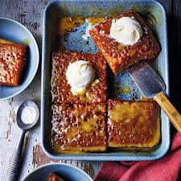

Home
Lasagna

Description
Malva pudding is a traditional south african spongy dessert served with either
custard, ice cream or both.
Ingredients
Pudding
- 2 eggs
- 1 cup sugar
- 2 tablespons apricot jam
- 0.75 cup flour
- 1 teaspoon baking powder
- 0.5 teaspoon salt
- 1 tablespoon butter
- 0.33 cup milk
Sauce
- 0.75 cup fresh cream
- 100g butter
- 0.5 cup sugar
- 2 teaspoons vanilla essence
Steps
- Preheat the oven to 180 degrees Celcius.
- Grease an 8x8 baking dish.
- Beat the eggs and 1 cup sugar then add the jam.
- Melt butter and add to the egg mixture.
- Add the flour, baking powder and salt to the egg mixture. Mix well.
- Pour the batter into the baking dish.
- Bake for 30 minutes until golden.
- In a saucepan, melt 100 g butter.
- Add the sugar and cream and simmer for 15 minutes.
- Pour over the baked pudding once it is done.